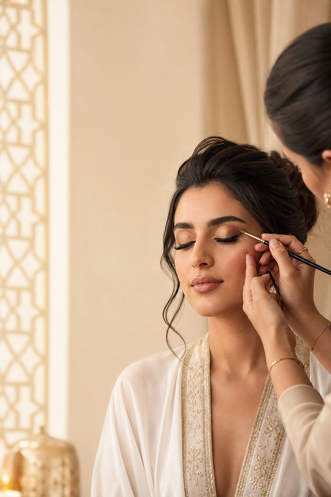
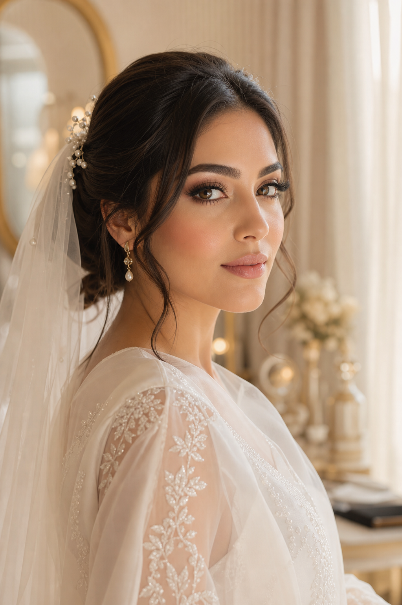
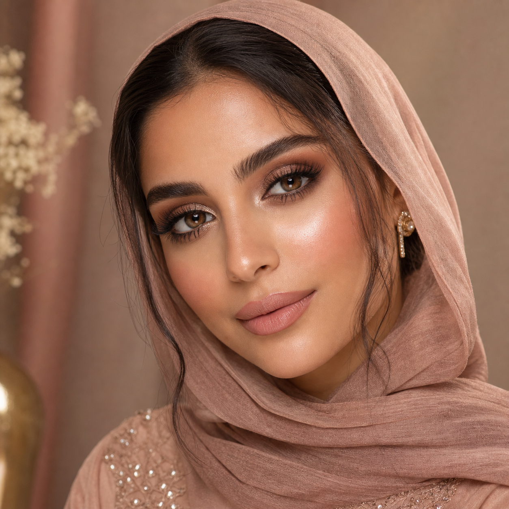

Luxury Bridal Beauty · UAE
Makeup artistry that feels elegant, calm, and camera-ready
Refined looks for brides, private events, and photoshoots with a booking flow that starts beautifully on WhatsApp.

Signature bridal calm
Sara Beauty Artistry
Bridal · Glam · Editorial
About Sara
A beauty experience where luxury begins before the final look
Sara’s brand can welcome clients into a calm editorial world: refined tools, skin-first preparation, balanced contouring, and a camera-ready finish for wedding mornings, engagement evenings, and luxury content shoots.
Why Brides Choose Sara
The website should sell the feeling before it sells the service
Signature Looks
Services shaped around the occasion
Bridal Makeup
A calm, detailed bridal experience from consultation to final touch.
Engagement & Henna
Elegant definition, photo-ready skin, and a look that suits the dress and mood.
Soft Glam
Polished eyes, warm tones, and refined glow for dinners and special occasions.
Photoshoot Looks
Makeup designed for lighting, camera detail, and a consistent visual story.
Portfolio Gallery
A gallery that sells the style before the price


For the live site, this area becomes a curated portfolio with real approved images, organized by bridal, engagement, party, and soft glam looks.
Palette direction
Ivory, rose, muted gold, deep berry, and soft green accents.
Bridal
Engagement
Soft Glam
Party Looks
Bridal Experience
A bridal journey designed to feel soft, clear, and reassuring
A dedicated bridal flow makes the client feel guided before she ever sends a message: consultation, optional trial, timing plan, and wedding-day preparation.
- Consultation: face features, dress, colors, and desired mood
- Trial session: skin, eyes, and final finish are refined calmly
- Planning: clear schedule for prep, photos, and touch-ups
- Wedding day: early arrival, calm setup, long-wear finish
WhatsApp Booking
Fast enough for mobile, respectful enough for bridal clients
Hi Sara, I’d like to book makeup for an event.
Welcome. Would you prefer English or Arabic?
Please send the service type, event date, location, and preferred look.
Client Love
Words from brides who trusted the details
“The look was soft, elegant, and stayed beautiful in every photo.”
Demo bride · Dubai“The calm timing made the wedding morning feel organized from the first step.”
Demo client · Abu DhabiBeauty Notes
Small beauty notes make the brand feel expert
FAQ
Clear answers before the first message
Do you travel to clients?
Travel can be confirmed after sharing the date, area, and timing.
How early should bridal bookings be made?
Bridal inquiries should be sent as early as possible so availability and trial options can be checked.
Is a deposit required?
The final booking process can include a deposit policy once package details are confirmed.
Instagram Preview
A social feed that turns beauty content into bookings
@sarabeautyartistry
In the final site, this can connect to Sara’s real Instagram feed or selected approved posts.
Contact
Book your appointment
Send the date, location, occasion type, and the look you love. The website can guide clients into a clean WhatsApp inquiry before Sara replies.
Book on WhatsApp